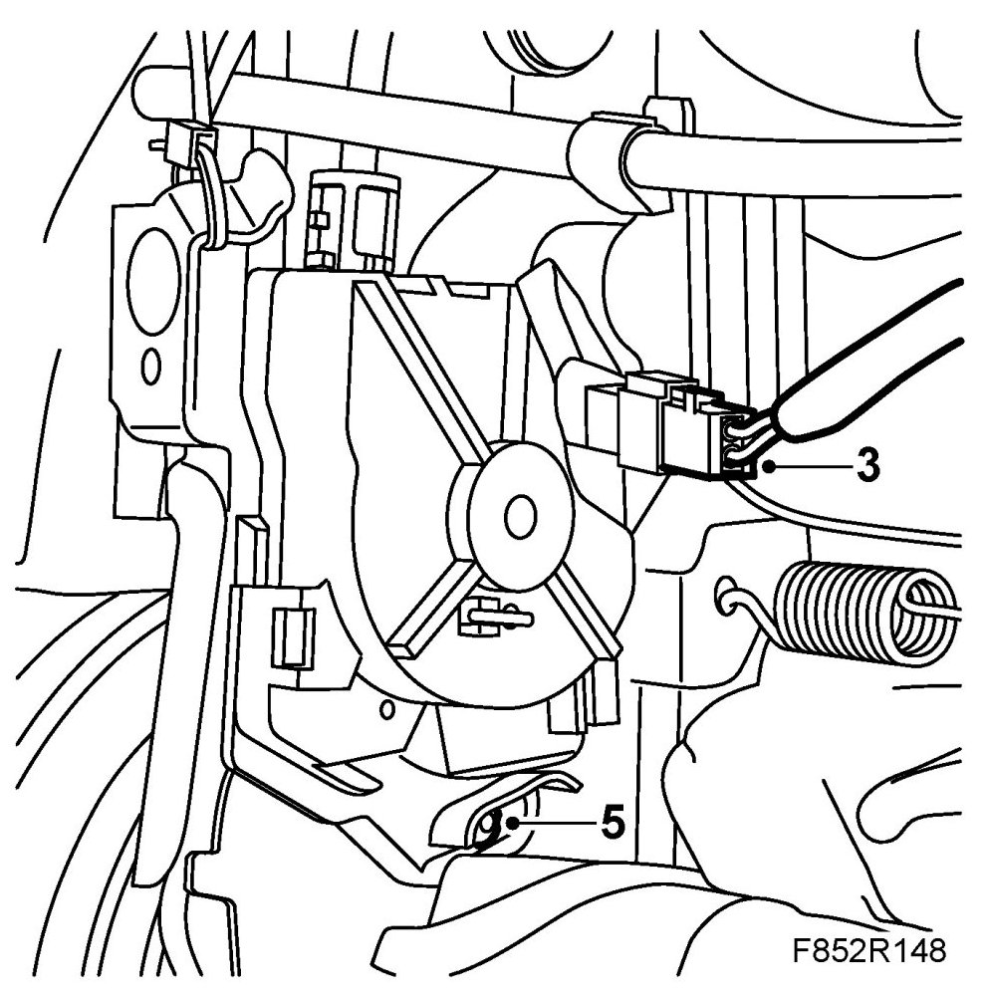
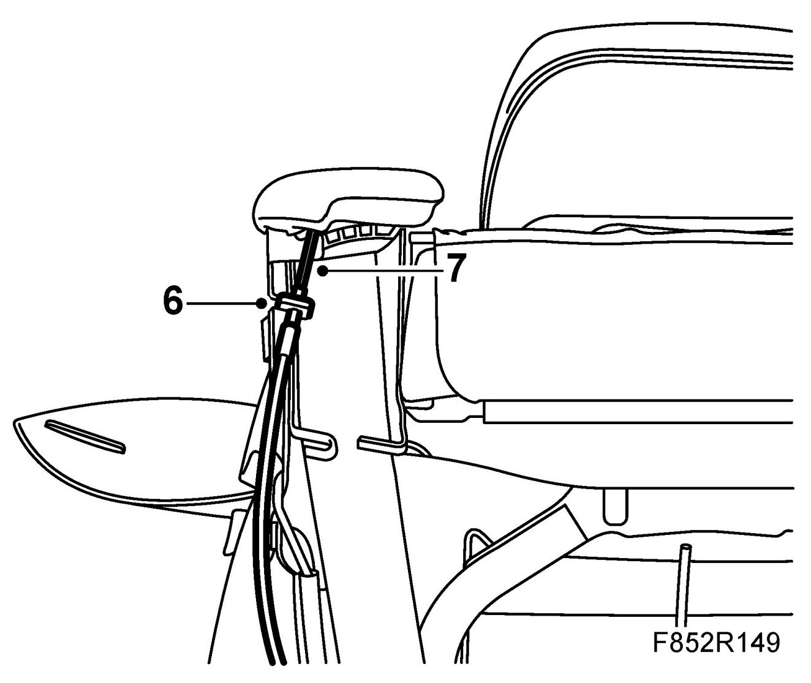
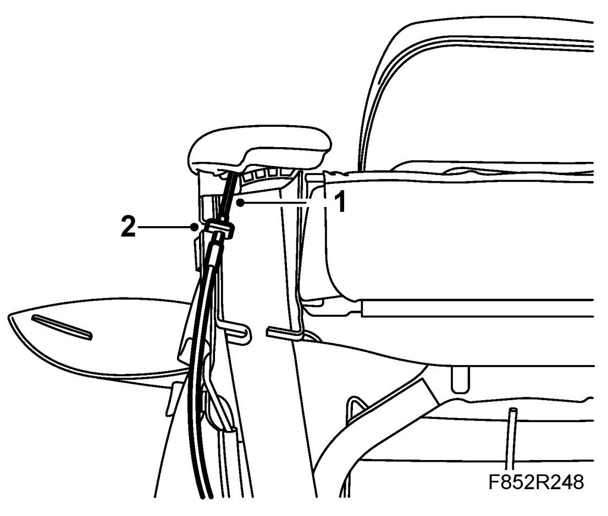
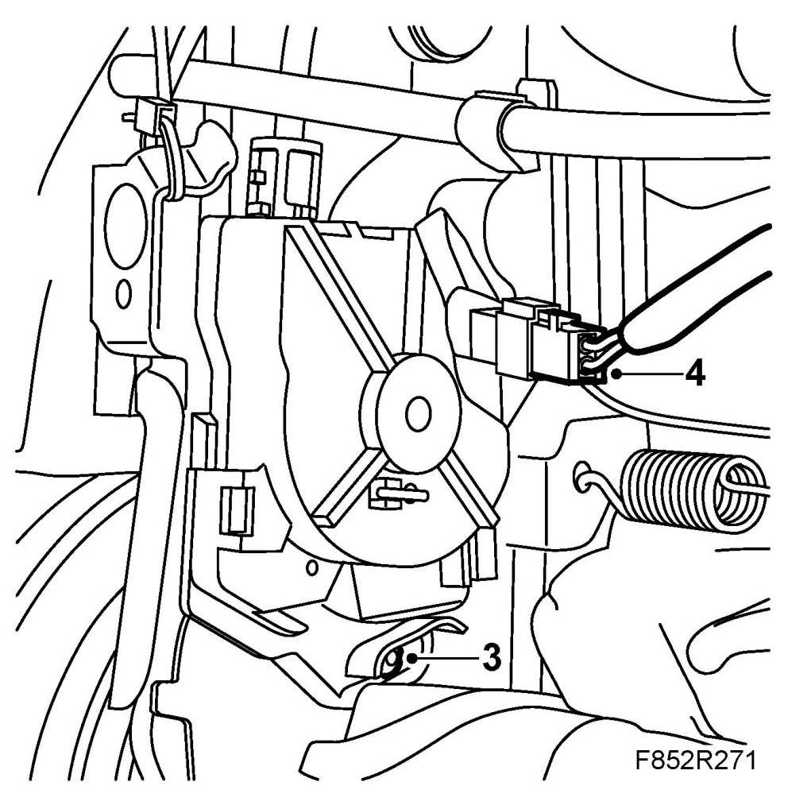
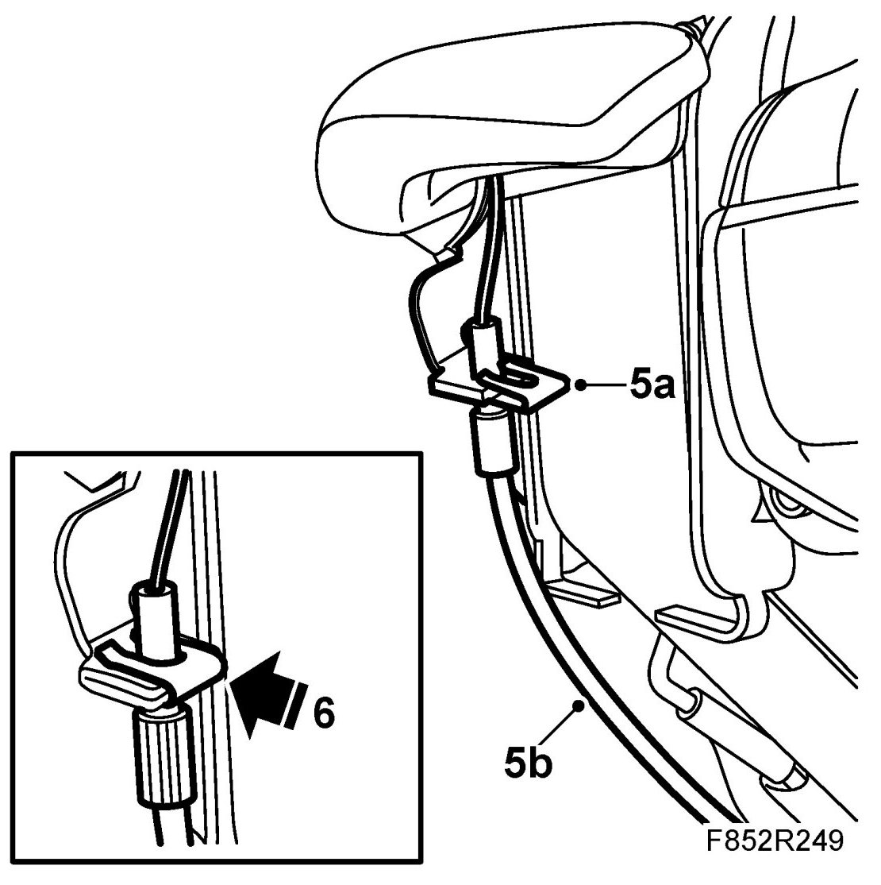
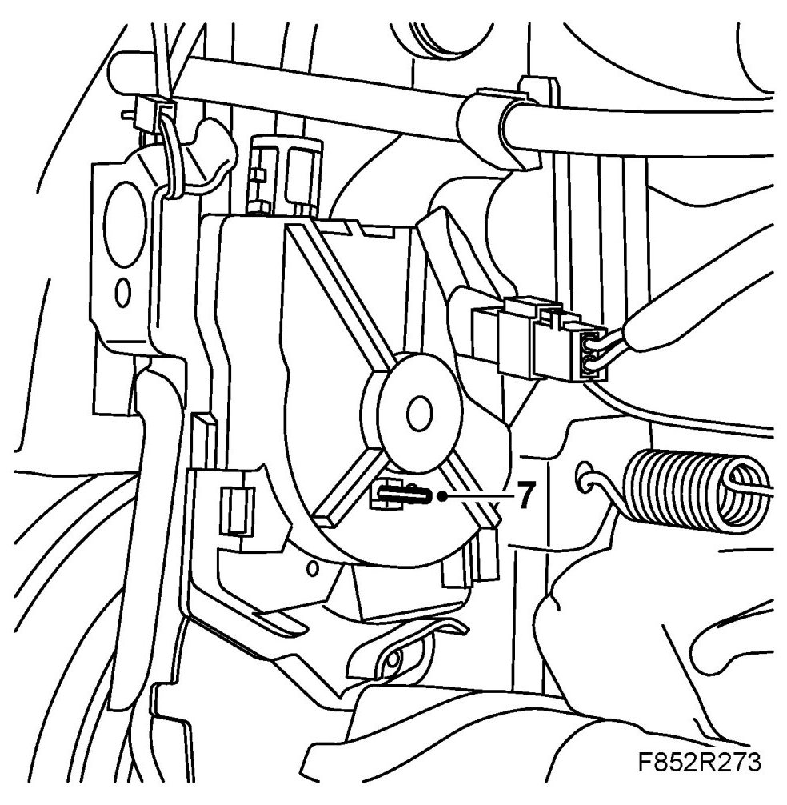

Changing Cable With Microswitch For Folding Forward Backrest, CV
Changing Cable With Microswitch For Folding Forward Backrest, CV
To remove
1. Raise the seat and fold the backrest forward.
2. Remove the backrest cover.
3. Unplug the connector from the microswitch.

4. Reposition the backrest. Make sure it locks in position.
5. Remove the screw and control unit from the seat frame.
6. Remove the retaining clips from the cable.

7. Remove the cable from the control arm.
To fit
1. Thread the wire through the console.

2. Connect the wire to the control arm.
3. Fit the control unit to the seat frame and tighten the bolt.

4. Plug in the connector to the microswitch.
5. Adjust wire tension as follows:
IMPORTANT: The seat restraint should be upright in the locked position.
5.a. Place the locking clip so that it sits firmly on the console but does not lock the wire sheath.

5.b. Pull the cable sheath down with minimal force so that the cable is just tensioned.
6. Press the locking clip in place.
7. Carefully remove the lock pin from the control unit.
IMPORTANT: Never lower the backrest with the lock pin attached.

8. Check the function of the backrest by folding it and restoring it to an upright position.
Make sure the backrest is locked in position. Check that there is some clearance (5-8 degrees) in the control arm.
IMPORTANT: The seat restraint should be upright in the locked position.
9. Check that the unit is adjusted correctly by inserting the lock pin into the hole in the control unit. Remove the lock pin.
10. Fit the backrest cover.